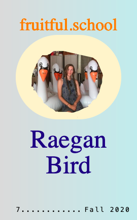

First, Last, Security
Interview with Raegan Bird, Fall 2020 Student
What was the process of creating the site like?
It went through a lot of iterations. First it was going to be a book, I printed all the pictures out in tiny grids and cut them up to sequence on the walls. Then I thought it made more sense to be online so I made a draft using Cargo Collective, a website building tool, that was a lot more linear, just clicking forward through the whole thing.
In workshop, I was encouraged to lean into the maze aspect of it, so it became a little more interactive. The actual code for it ended up being pretty bare bones and simple, most of the time went into linking all the pages together and building a maze that made enough sense. I had to draw out a key for myself so I wouldn't get lost. I wanted the sequence to be somewhat associative and wanted the navigation to be frustrating but not so frustrating that you give up, just enough to hang on for the dopamine hits of more pictures.
What's something you'd like visitors to your site to know that they wouldn't otherwise?
Despite some of these images being really bleak, I actually absolutely loved living in Tucson and would move back in a heartbeat!
Also, the project sorta came full circle. I collected pictures in anticipation to move there for longer than I ended up staying (pandemic etc.)
It was also a major challenge for me to find steady work out there. I would get a ton of gigs and then nothing and it would repeat. Some of the more steady work I got was with a guy I met from Craigslist. He and his buddy were able to get a loan and started buying these super run down trailer homes. I worked to gut and help rebuild them and then he would either sell them to people or back to the park. So after collecting all these pictures I ended up playing the role of real estate photographer. In taking the pictures there was this balance of trying to figure out what potential buyers would want to see but then also having moments like this one — where we wanted to get the posting onto Craigslist but hadn’t found a mirror for cheap enough yet so the room just feels a little off.
But I also think that’s a feeling that is understood and respected in Tucson. There’s the general understanding that while the city is increasingly gentrifying, the heart of it is pretty scrappy and impoverished. At the same time the scrappiness also feeds into a lot of liveliness and creativity and I think some of that feeling comes across in the pictures. Like someone thinking, “instead of spending money we don’t have to redo all the bathroom tile after a plumbing problem, let’s just make a path of river rock up to the toilet, that’s character, people will love it.”
What did you learn through creating the site and being in fruitful school?
Wow, so many things! I came to fruitful school with MySpace-level HTML literacy and I could not have imagined everything that was possible. I think the most difficult part of learning a new language and something that can keep you from being fluent in it is not being around other people who speak it. Before when I would look up tutorials and stuff, it was hard for me to contextualize it all. Having access to a community of people who not only work in web making but are also artists and designers was so crucial for me to engage and learn.
Would say one of the biggest things I took away from the experience has been confidence :-) Fruitful made the web feel much less bleak and instead opened my mind to a space of play and exploration. I feel steady now in my foundation of starting a site and know more of what to look for to get my ideas across, have even been able to do a few freelance gigs since. I have stayed eager and energized to continue learning, practicing, and code-foraging and am in the process of hand coding a group show for Blue Arrangements, my collaborative publishing project.
Have you been collecting any new images (apartment or otherwise) lately?
Always! In terms of found images, still mostly screenshots and mostly on Craigslist or eBay.
I’m really excited about pictures people take of things they are trying to get rid of but not throw away and especially images taken by people who do not consider themselves photographers, (especially x100 when the image taker is also anonymous).
A couple months ago, I was on this huge cliff/rock thing on the ocean and found a handful of ripped up drug store prints of a middle aged person sitting at a table with a lit birthday cake. I still have the pieces and feel like I can’t get rid of them for some reason, even though I feel really guilty about it, like someone made a conscious act to try and let this person or memory go, yet I can’t stop myself from projecting a story onto it.
I’ve also been collecting every picture I can find of truth windows.
What type of website would you like to experience more in the future?
More websites that collect, connect and archive learning tools in accessible ways.
More websites that promote low-stakes creative collaboration.
More websites that feel like curiosity shops.
You can also experience a walkthrough of First, Last, Security via our video recording of the Fall 2020 live exhibition (at the 54:34 mark)!
🍐
Raegan Bird
https://raeganbird.com
